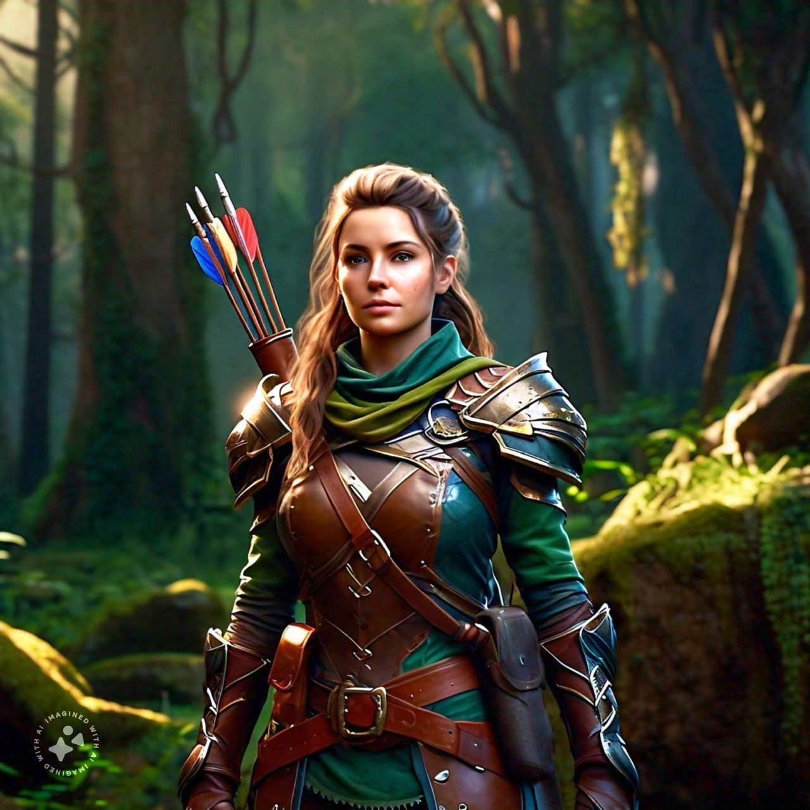

The Story
The cult of Unity is an organization created by Morgan, a member of “the liberators.” Morgan’s primary goal is to disrupt the strenuous peace that all the nations have so that they can take over the world. He then wants the demons to take over the world as a member of “the liberators.” The player is then tasked by the king of Valatos to disrupt the operations of the cult since, according to “the prophecy of hope,” the player is the one who has any chance of defeating Morgan and the masked knight.
gameplay
Rise Across Mereddia is a real-time combat RPG set on the fictional continent of Mereddia and all its fictional territories. The player can choose between a number of fictional classes, such as rogues or paladins, each with their own weapon proficiencies and class-dependent magic. Other than the player, you can also play as the other characters in the party, and there are combo attacks that can be done by multiple characters.
